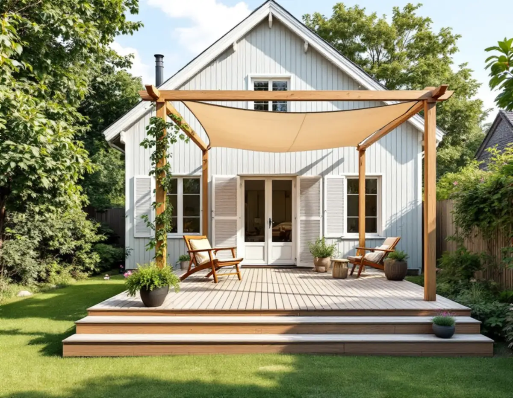
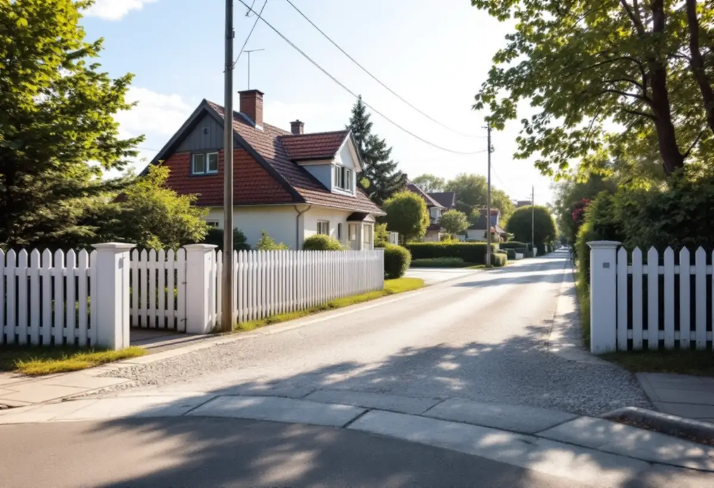

Platsbesök
Vi mäter marken vid altanens yttersida, avstånden till gränsen och sikten vid utfarten.

Sundbybergs stad har en egen bygglovsguide, och för pergolor, staket och spaljéer gör staden ofta en bedömning i det enskilda fallet.
Beskriv jobbet kort.
Något blev fel. Kontrollera uppgifterna eller ring 08 12 410 276.
Vi tittar på jobbet på plats innan du får offert.
Du ser vad som ingår och vad det kostar.
Vi drar av ROT direkt och sköter ansökan.
Geal Entreprenad AB, Bromma. Org.nr 559303-7566.

I Duvbo gäller dessutom särskilda regler. Geal Entreprenad AB bygger altaner, pergolor, staket och plank vid villor och radhus i Sundbyberg, med gratis platsbesök och skriftligt kostnadsförslag.
Sundbybergs stad beskriver en altan som en golvkonstruktion som är upphöjd i förhållande till marken och avsedd som uteplats. Inom detaljplan krävs bygglov för att bygga, flytta eller utöka en altan som blir högre än 1,8 meter, eller högre än 1,2 meter om den placeras längre bort än 3,6 meter från en byggnad. Bygglov krävs också för att bygga in altanen, till exempel med ett inglasat uterum.
Höjden mäts normalt från marken vid altanens yttersida upp till altangolvets ovansida, och en mur eller ett plank på altanen ingår i mätningen. Staden skriver att om höjden i någon del överskrider gränsen krävs bygglov för hela altanen. På en sluttande tomt är det alltså den högsta punkten som avgör.
Lovfria altaner får avvika från detaljplanen så länge altanerna på tomten tillsammans inte överstiger 50,0 kvadratmeter, utom där det finns bestämmelser om skydd mot störningar. Oavsett lovplikt ska altanen enligt staden vara tillgänglig.
Krävs bygglov vill staden ha situationsplan, plan-, fasad- och sektionsritningar, en kulör- och materialbeskrivning och ett förslag på kontrollplan, och ritningarna ska vara fackmannamässigt utförda och skalenliga. Dem tar vi fram tillsammans med kostnadsförslaget.
Vanligtvis behövs inget bygglov för staket, spaljé eller pergola, men staden skriver att många fall kräver en bedömning. Den samlade bedömningen gäller konstruktionens höjd, längd, utförande och beständighet, genomsiktlighet, utformning, omgivningspåverkan, placering och ändamål. Lovplikten inträder först om konstruktionen kan definieras som ett lovpliktigt plank eller tak.
En pergola är enligt staden en gles konstruktion som bärs upp av ben i hörnen, ofta som stöd för växter. Får pergolan ett tak i form av markis, lameller eller segelduk kan bygglov behövas. Är den förankrad i huset kan den bedömas som en väsentlig yttre ändring av byggnaden.
Vill du ha besked i förväg finns möjligheten att söka ett frivilligt bygglov, där byggnadsnämnden prövar åtgärden som om den vore lovpliktig.
Ett plank eller en mur över 1,2 meter ska stå 4,5 meter från gränsen mot granne, samfällighet eller allmän plats, annars krävs skriftligt medgivande. Mot allmän platsmark skickas förfrågan till kommunstyrelsen. Avståndet till järnvägsspår ska vara minst 30 meter. Ibland kan det krävas en utstakning och en lägeskontroll, så att planket hamnar på rätt sida gränsen.
Staden lägger också vikt vid trafiksäkerheten. Vid en utfart mot gata bör staket, plank, mur och växter inte vara högre än 0,7 meter inom sikttriangeln, och sikten bör vara fri minst 2,5 meter från gatan eller gångbanan. På en hörntomt sträcker sig triangeln minst 10 meter åt vardera hållet, och mot en cykelväg 5 meter utmed cykelvägen och 10 meter utmed gatan.
Bor du i Duvbo eller i en kulturhistoriskt värdefull byggnad kan en altan kräva bygglov om den påverkar områdets karaktär eller husets yttre karaktärsdrag, och staden bedömer det i varje enskilt fall. Murar och plank kräver lov på samma villkor, och eftersom murar ofta är karaktärsskapande krävs lov för murar i Duvbo i de allra flesta fall. Där går det inte heller att bygga en lovfri komplementbyggnad. Om att bygga nytt eller bygga till i Duvbo finns mer under byggföretag i Sundbyberg.
Vi mäter marken vid altanens yttersida, avstånden till gränsen och sikten vid utfarten.
Vi stämmer av mot bygglovsguiden och, i Duvbo, med bygglovsenheten.
Situationsplan och ritningar tas fram när lov eller medgivande behövs.
Grund, stomme, trall, räcken och pergola redovisas var för sig.
Plintar, bärlinor, trall och räcken byggs med höjden kontrollerad mot gränserna.
Vi går igenom resultatet med dig och lämnar mått och ritning.
Skatteverket ger rotavdrag för att bygga en altan till ett småhus om den byggs ihop med huset, och för att montera markiser. Att reparera altaner och räcken som sitter ihop med huset ger också avdrag. Att bygga staket och murar ger inget avdrag, och i en bostadsrätt ger det inget avdrag att bygga eller bygga om en altan.
Avdraget är 30 procent av arbetskostnaden, högst 50 000 kr per person och år och högst 75 000 kr tillsammans med rutavdrag. Material och resor ingår inte, och Geal drar avdraget direkt på fakturan.
Altanens yta och höjd, hur mycket tomten lutar, räcken, trappor och om pergolan ska ha tak väger tyngst. Platsbesöket är gratis och du får ett skriftligt kostnadsförslag.
Altan, väggar, dörrar och inredning.
Snickare i Stockholm →Takbyte, takbesiktning och plåtarbeten.
Takläggare i Sundbyberg →Rött lertegel och synliga taktassar i Duvbo.
Takrenovering i Sundbyberg →Duvbo, potten och medgivandena.
Attefallshus i Sundbyberg →Ventilationen, OVK och Duvbo.
Badrumsrenovering i Sundbyberg →Nytt hus, träd och regler i Duvbo.
Byggföretag i Sundbyberg →Puts och kulör i stadskärnan.
Fasadmålning i Sundbyberg →Panel och puts på Duvbos villor.
Fasadrenovering i Sundbyberg →Duvbo, flerbostadshusen och lovet.
Fönsterbyte i Sundbyberg →Egnahemsvillornas fönster i Duvbo.
Fönsterrenovering i Sundbyberg →Trägolv i äldre villor och nya golv.
Golvläggare i Sundbyberg →Ta bort färg och fernissa från gamla golv.
Golvslipning i Sundbyberg →Duvbos villor och stadens lägenhetskök.
Köksrenovering i Sundbyberg →Lamellhus, kulörbyte och bostadsrätt.
Målare i Sundbyberg →Duvbos tak, rännor och lov.
Plåtslagare i Sundbyberg →Container, ställning och grannar.
Takbyte i Sundbyberg →Ny tapet i äldre lägenheter.
Tapetsering i Sundbyberg →Duvbo, träden och riktlinjerna.
Tillbyggnad i Sundbyberg →Duvbos villor, kaminer och etablering.
Totalrenovering i Sundbyberg →Eller ring 08 12 410 276, mån–fre 08–17.
Beskriv jobbet kort.
Något blev fel. Kontrollera uppgifterna eller ring 08 12 410 276.